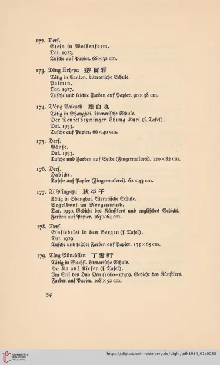

1934年柏林展览图录第54页，滕白也三件展品
访问原网页 ↗Visit original website ↗

馆藏图像与原文Archived images and documents
- 1934年柏林展览图录第54页，滕白也三件展品Berlin 1934 catalogue, p. 54: three works by Teng I072
- 1934年柏林展览图录，图版174《钟馗》Berlin 1934 catalogue, plate 174: Zhong Kui I073


相关记录Related records · S082
原始网址Original URL
https://digi.ub.uni-heidelberg.de/diglit/adk1934_01/0007